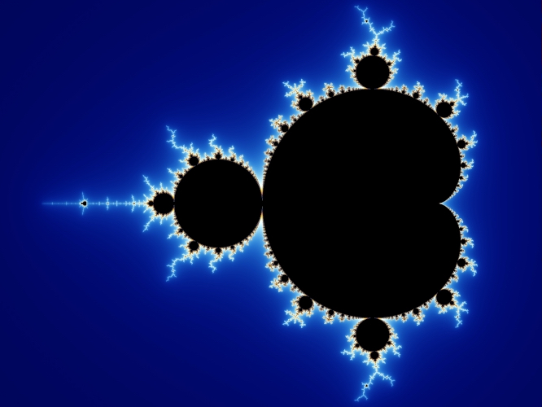
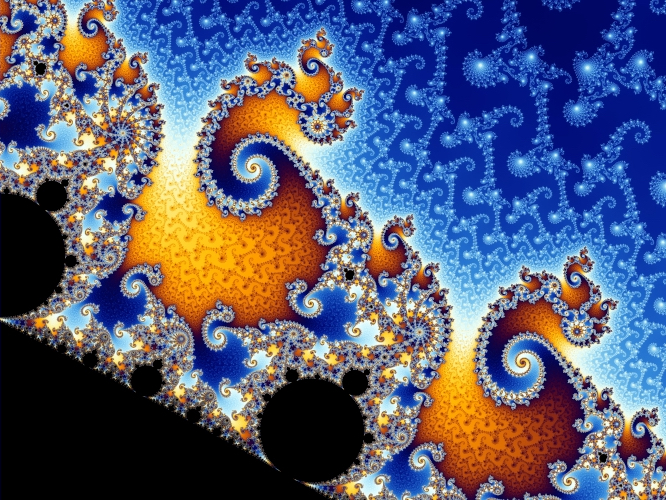
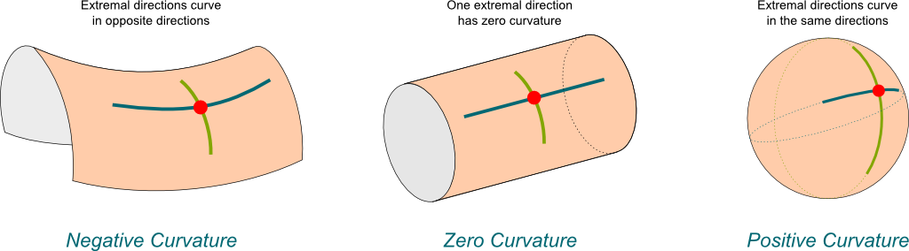
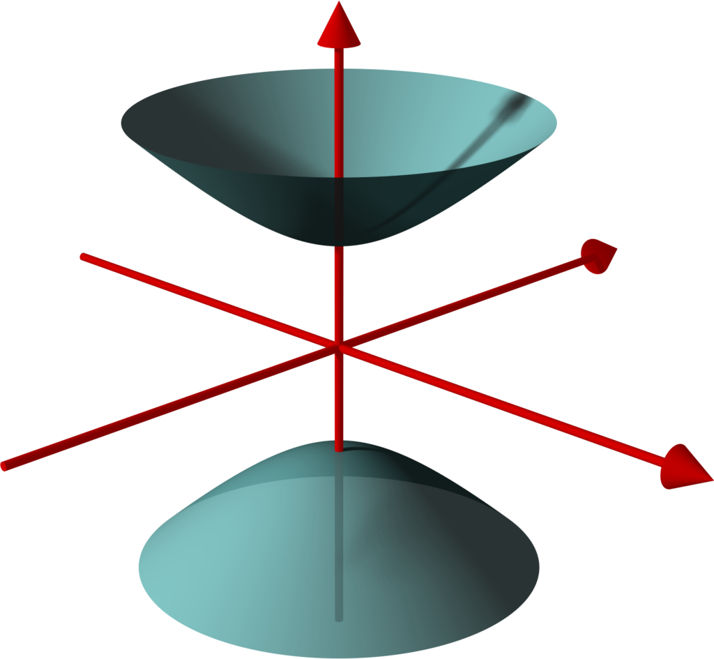
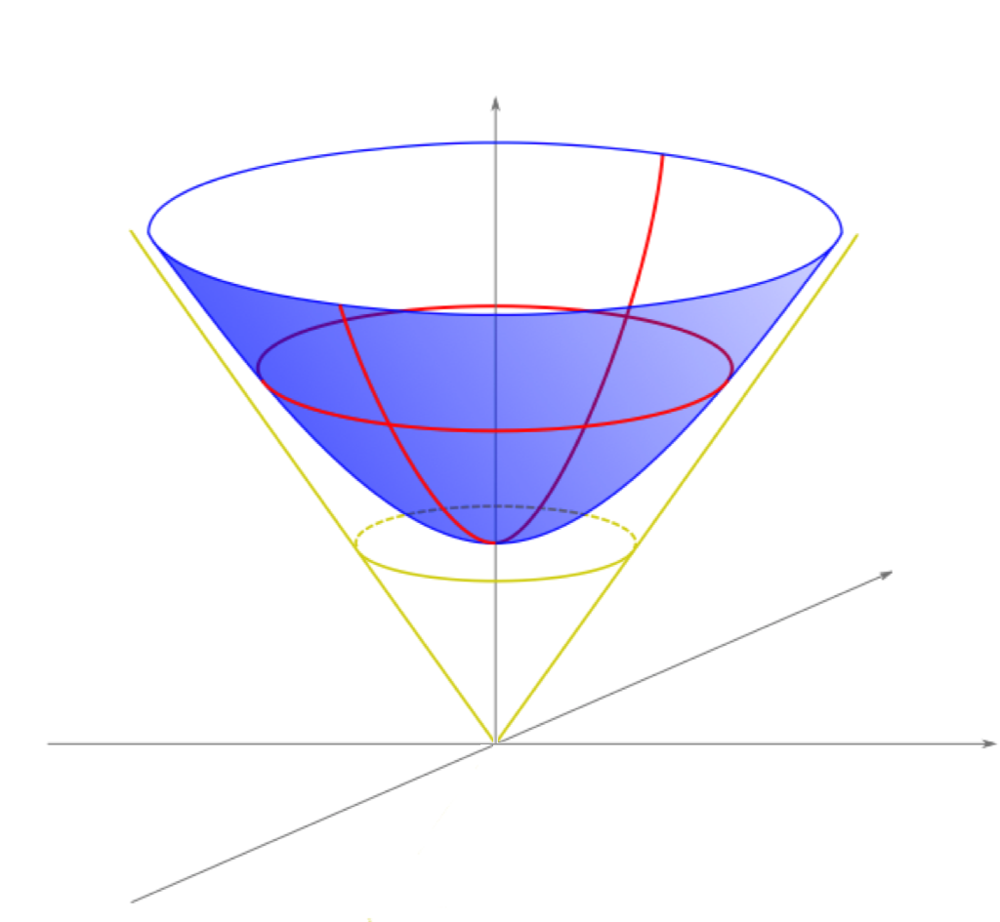
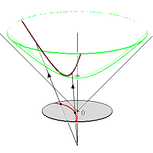
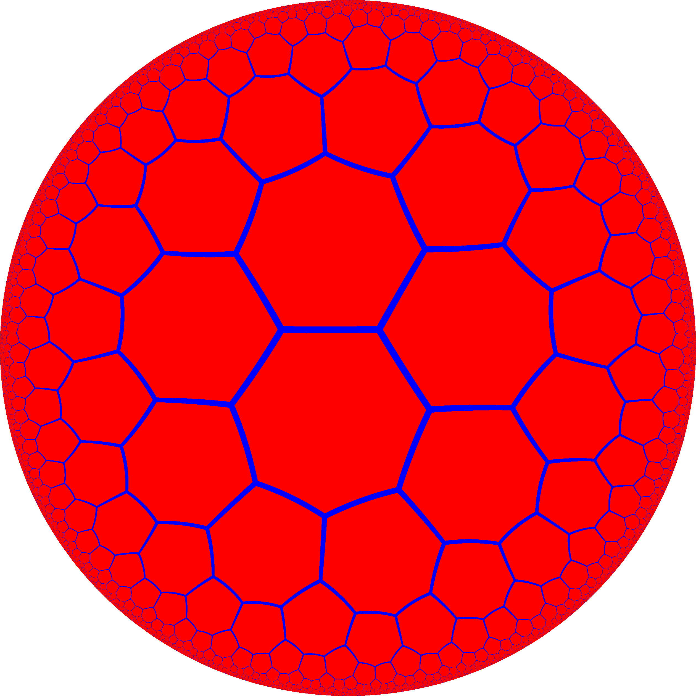

Hyperbolic fractals
To skip the maths and play with an interactive fractal browser, click here!
The Mandelbrot Set
The Mandelbrot set is probably one of the most famous fractals, known for its self-similar deep zooms and often demonstrated as an example of mathematical beauty.


Both images generated by Wolfgang Beyer.
Mathematically, the Mandelbrot set is the set of values \(c\in\mathbb{C}\) for which the absolute value of the terms in the sequence, \[z_0=0,\quad z_{n+1} = z_n^2 + c,\tag{1} \] doesn’t fly off to infinity. Equation \((1)\) is known as the orbit function for the Mandelbrot set. For example, when \(c=1\), the sequence reads \(z_n = 0, 1, 2, 5, 26, \dots\) This sequence in this particular case tends towards infinity and so \(c=1\) is not in the Mandelbrot set.
One can display all the points in the set on a complex plane to see a basic plot of the famous Mandelbrot shape, but normally a plot is instead produced of the number of iterations before \(|z_n|\) is greater than some threshold value. In the above images the iteration count is further smoothed using some extra mathematical tricks.
Interpreting the Process Geometrically
When plotting the Mandelbrot set we are associating complex values to points in the 2D plane. The Cartesian coordinates associated with a point \(z\) are \((z_x, z_y)\), with \[ z = z_x + iz_y, \] but an equivalent way of associating \(z\) to a point in the plane is by using 2D polar coordinates \((z_r,z_\theta)\), with \[ z = z_re^{iz_\theta}.\] Here \(z_r\) is the distance from the origin to the point and \(z_\theta\) is the angle of the point in relation to the \(x\) axis. The two systems are related by, \[ z_x = z_r\cos(z_\theta),\quad z_y=z_r\sin(z_\theta). \tag{2} \] We can use the Cartesian and polar coordinate systems shown in Equation \((2)\) to reinterpret the operations used in Equation \((1)\) geometrically.
First, consider the addition operation. This is easily understood by writing the operation in Cartesian form, \[z + c \rightarrow (z_x + c_x, z_y+c_y).\]
Geometrically, the operation has the effect of translating the point in the \(x\) direction by a distance of \(c_x\) and in the \(y\) direction by a distance of \(c_y\). Note that another geometric way of getting to the same point is by first rotating the point associated with \(z\) about the origin by \(-c_\theta\), translating it in the \(x\) direction by \(c_r\), and then finally rotating back about the origin by \(c_\theta\).
Now consider the operation \(z^2 = z \cdot z\). Rewriting the complex number \(z\) in 2D polar form and then simplifying, \[ z^2 = z_re^{iz_\theta} \cdot z_re^{iz_\theta} = z_r^2e^{i2z_\theta}. \] This is still in polar form and shows that the operation \(z^2\) takes the point associated with \(z\), rotates it about the origin by \(z_\theta\), and then dilates by \(z_r\) so that the distance of the point from the origin is squared. Again, there is an alternative geometric method to get to the same point: First take the origin point, translate it in the \(x\) direction by \(z_r^2\) and then rotate around the origin by \(2z_\theta\).
Using the alternative interpretations above, we can think of Equation \((1)\) as a set of translations along \(x\) and rotations around the origin. Given a value for \(z\) and \(c\) we can calculate the result of applying Equation \((1)\) by finding the complex value associated with the point obtained by applying the following geometric process:
- Take the origin point and translate it by \(z_r^2\) in the \(x\) direction.
- Rotate around the origin by \(2z_\theta-c_\theta\).
- Translate by \(c_r\) in the \(x\) direction.
- Rotate around the origin by \(c_\theta\).
Later, we will use a similar geometric process to define a hyperbolic version of Equation \((1)\), set in curved space rather than the standard flat Euclidean space. Since the overall structure of the Mandelbrot set results from the algebra of the complex numbers that we are mimicking with a geometric process, things should not look super different, but with in curved space moving around and zooming into details should at least look fairly interesting.
Hyperbolic Space
Hyperbolic n-space, denoted \(\mathbf{H}^n\), is a homogeneous space that has a constant negative curvature. Curvature here specifically means Gaussian curvature intrinsic to the surface and is a measure of how much geometric objects and operations on the surface deviates from the behaviour in flat space (zero curvature).

To visualise curved space we need to be able to somehow convert it for display in 2D or 3D Euclidean space, so that it can be sensibly displayed on your screen. However, Hilbert’s theorem says that we can’t embed even a small part of hyperbolic space into 3D Euclidean space due to its constant negative curvature. Luckily, there are several so-called models of hyperbolic space that we can use instead. These models are simply different ways of expressing the structure of hyperbolic space mathematically. We will be using two models: our main calculations will be made in the Hyperboloid Model and we will visualise the result later using the Poincaré Disc Model.
The Hyperboloid Model
The Hyperboloid Model is a model of n-dimensional hyperbolic geometry in which points are associated with points on a hyperboloid surface living in an (n+1)-dimensional non-Euclidean space. A hyperbolic distance function is defined on the surface so that hyperbolic geometry is preserved.
Often Minkowski space is used here due to its useful applications in the theory of special relativity. However, I will instead use Lorentz space. It is essentially the same — the coordinates are just re-ordered and some signs are flipped. It doesn’t change the behaviour of the space but does avoid references to physical “time-like” and “space-like” dimensions.
We begin defining Lorentz space by writing down an inner product. For vectors \(\mathbf{u}\) and \(\mathbf{v}\) in \(\mathbb{R}^d\) the Lorentzian inner product is, \[\mathbf{u} \cdot \mathbf{v} = u_1v_1 + u_2v_2 + \dots - u_dv_d.\] This looks very similar to the standard Euclidean inner product expect for the subtraction of the final components. This definition is valid for any vectors \(\mathbb{R}^d\) but we’ll only really consider the case when \(d=3\) and denote that space as \(\mathbb{L}^{2,1}\), Lorentz (2,1)-space. Following on from the inner product, we can define both the Lorenz norm and Lorentz distance between two vectors,\[ ||\mathbf{u}|| = \sqrt{\mathbf{u} \cdot \mathbf{u}}, \] \[ d_L(\mathbf{u},\mathbf{v}) = || \mathbf{u} - \mathbf{v} ||. \]
Now, to recreate the geometry of hyperbolic space we need a surface, \(\mathcal{H}\), with constant negative curvature. A sphere with radius \(r\) can be shown to have a curvature of \(\kappa = \frac{1}{r^2}\), so if we could somehow construct a sphere with a radius of \(r = \sqrt{-1}\), we would immediately satisfy our requirements. In analogy to the definition of an n-sphere in Euclidean space we form our surface, \[\mathcal{H} =\{\mathbf{u} \in \mathbb{L}^{2,1} : ||\mathbf{u}|| = i\}.\]
In Euclidean space this is impossible, but as it turns out such a sphere can exist in \(\mathbb{L}^{2,1}\) consisting of all the points \(\mathbf{u}\) satisfying the equation \(u_1^2+u_2^2-u_3^2 = -1.\) Back in Euclidean space, this is a two-sheeted hyperboloid and we choose to define our hyperboloid model on the positive sheet only, with \(u_3>0.\)

{kind=link}

The last piece needed to ensure hyperbolic geometry is enforced on the surface of \(\mathcal{H}\) is a hyperbolic distance function, which we define as \[d_\mathcal{H}(\mathbf{u},\mathbf{v}) = \mathop{\text{arccosh} }(-\mathbf{u} \cdot \mathbf{v}),\] so that for any vectors \(\mathbf{u},\mathbf{v} \in \mathcal{H}\), \[\mathbf{u}\cdot \mathbf{v} = ||\mathbf{u}||.||\mathbf{v}||.\cosh\left(d_\mathcal{H}(\mathbf{u},\mathbf{v})\right),\] in analogy to the geometric formulation of the Euclidean dot product. It’s fairly easy to show that \(d_\mathcal{H}\) satisfies all the criteria to be a metric on the hyperboloid, but I won’t go into all the details here.
Hyperbolic Mandelbrot Set
Lorentz Transformations
In the first section we defined the Mandelbrot set in terms of translations and rotations. These operations are really maps from the plane \(\mathbb{R}^2\) back to itself, such that the Euclidean distance between points does not change. To create a hyperbolic analogue we need similar transformations for hyperbolic space. The Lorentz group forms a set of transformations for \(\mathbb{L}^{n}\) that preserves the hyperbolic distance function in exactly the way we need. There are three types of Lorentz transforms (not including the identity) that make up the group. Parabolic, hyperbolic, and elliptic.
The elliptic transformations behave essentially the same as Euclidean rotations, defined in terms of an angle. The transformation preserves both the distance between points and the distance between all points and the origin. In the case of the 2D hyperboloid model a rotation of \(\theta\) looks like this, \[ R(\theta) \mathbf{u} = \begin{bmatrix} \cos(\theta) & -\sin(\theta) & 0 \\ \sin(\theta) & \cos(\theta) & 0 \\ 0 & 0 & 1 \end{bmatrix} \begin{bmatrix} u_1 \\ u_2 \\ u_3 \end{bmatrix} \]
The hyperbolic transformations are similar to Euclidean translations along an axis. They preserve the distance between points, but not the distance between points and the origin. This type of transformation is called a boost and is defined in terms of a hyperbolic angle, also known as the rapidity. In the case of the 2D hyperboloid model a boost with rapidity \(\eta\) looks like this: \[ T(\eta) \mathbf{u} = \begin{bmatrix} \cosh(\eta) & 0 & \sinh(\eta) \\ 0 & 1 & 0 \\ \sinh(\eta) & 0 & \cosh(\eta) \\ \end{bmatrix} \begin{bmatrix} u_1 \\ u_2 \\ u_3 \end{bmatrix} \]
The parabolic transformations don’t really have any analogue in Euclidean space, and so we won’t be using them. They do have use in the theory of special relativity and there they are often called null rotations. In case you’re interested, they look like this:
\[ N(\alpha) \mathbf{u} = \begin{bmatrix} 1-\frac{\alpha^2}{2} & -\alpha & \frac{\alpha^2}{2} &\\ \alpha & 1 & -\alpha\\ -\frac{a^2}{2} & -\alpha & 1+\frac{\alpha^2}{2} \end{bmatrix}\begin{bmatrix} u_1 \\ u_2 \\ u_3 \end{bmatrix} \]
Hyperbolic Analogue of the Orbit Function
We now use the above transformations to recreate the geometric process of Equation \((1)\), the orbit function for the Mandelbrot set, with hyperbolic transformations. We first replace Euclidean rotations with Lorentzian rotations and Euclidean translations with boosts. We define analogies to the polar coordinates of \(\mathbf{u}\) in the following way, \[u_\eta = d_\mathcal{H}(\mathbf{u}, \mathbf{0}),\quad u_\theta = \mathop{\text{arctan}}\left(\frac{u_2}{u_1}\right). \]
The result is the following construction for Equation \((1)\): Given a \(\mathbf{u}, \mathbf{c} \in \mathcal{H}\), calculate the point on \(\mathcal{H}\) obtained by applying the following geometric process:
- Take the origin point, \(\mathbf{0} = (0,0,1)\), and boost it by \(u_\eta^2\).
- Rotate around the origin by \(2u_\theta-c_\theta\).
- Boost by \(c_\eta\).
- Rotate around the origin by \(c_\theta\).
The rest of the process of defining the Mandelbrot set remains the same. Note that the process can be trivially extended to other similar fractals based on orbit functions on the complex plane. For example, the method above can also be used to generate Julia set fractals.
Visualisation
The Poincaré Disc model
Visualising the hyperboloid model is difficult due to the fact that while the surface is two-dimensional, the hyperboloid itself lives in a three-dimensional Lorenz space. One option could be to simply visualise the hyperboloid surface in 3D, as if it were living in \(\mathbb{R^3}\), and projecting down to your 2D screen in the standard way. However, this would make manipulating the view and getting an intuition for how hyperbolic space really behaves rather difficult since we lose any way to express the hyperbolic distance. Instead, we will project the hyperboloid model down to 2D using the Poincaré Disc model.
In this model the entire hyperboloid surface is stereoscopically projected to, and drawn inside, a circular disc. An interesting consequence of this is that you can see the entirety of the infinite surface all at once. It all “fits” because as you move towards the outer boundary the hyperbolic distance between points grows exponentially and features shrink away into nothingness. Using a Poincaré disc neatly demonstrates the different geometries possible in hyperbolic space. For example, you can easily show a tiling of the hyperbolic plane with heptagons while such a tiling is impossible in the Euclidean plane.

{kind=link}

{kind=link}
The process to stereoscopically project the hyperboloid model to the Poincaré disc is not too difficult. Starting with a point \(\mathbf{u}\) on the hyperboloid, a line is drawn between \(\mathbf{u}\) and \(\mathbf{N} = (0,0,-1)\), intersecting the \(z=0\) plane at the required point \(\mathbf{p} = (p_1, p_2)\) on the Poincaré disc. This procedure leads to the following relationship between the points \(\mathbf{u} = (u_1, u_2, u_3)\) on the hyperboloid and \(\mathbf{p} = (p_1, p_2)\) on the disc,\[\mathbf{p} = \left( \frac{u_1}{u_3+1}, \frac{u_2}{u_3+1} \right),\quad \mathbf{u} = \frac{\left(2p_1, 2p_2, 1+p_1^2+p_2^2\right)}{1-p_2^2-p_2^2}.\]
Hyperbolic Fractal Explorer
I have created an interactive hyperbolic fractal explorer, shown below. Note that this demo runs using webGL and so the precision of the rotation calculations are fairly limited. The precision loss becomes readily apparent at higher levels of zoom. Nevertheless it’s a fun little demonstration of the ideas above.
In addition to the controls in the top right, click and drag to boost around. W will zoom in, S will zoom out and the A and D keys will also boost left and right.
References
In addition to the links throughout, here is some more useful reading material.
- The Hyperbolic plane: “A Strange New Universe”
- Hyperbolic Geometry and Poincaré Embeddings
- Stack Overflow: Is hyperbolic rotation really a rotation?
- Wikipedia: Hyperbolic Space
- Wikipedia: Poincare Disc
- iq: The Main Bulb of the Mandelbrot Set
- iq: Smooth Iteration Count for Generalized Mandelbrot Sets
- Hyperogue: Models and projections of hyperbolic geometry